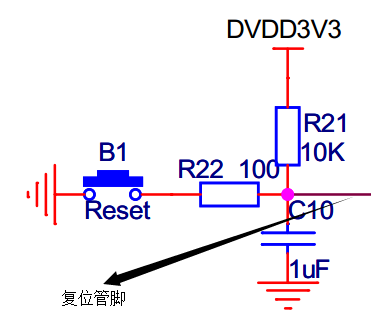
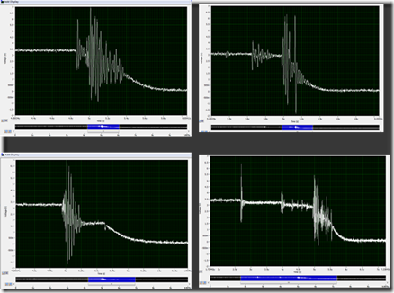

当初开始学FPGA的时候，总是疑惑：FPGA不是没有复位管教么，但总在always看到有复位信号。这个复位信号（我们暂且称为rst_n）从哪里来？
实际上是可以从两个方面获得的，这与我们的MCU一样。
考虑到系统的初始化可能需要一定的时间，需要写一段Verilog代码进行延时复位，这段代码综合后就是上电自动复位的过程，上电自动复位也要外部硬件提供一个低电平脉冲，第二种方法要求有按键复位的按键电路。作为一个正常的系统，上电自动复位和手动的按键复位都是必须的，且两者实际上是不可分割的。
原理上很简单，写一个复位模块，等待一段稳定时间，将复位信号拉低一段足够长的时间，再将复位信号拉高。
如下Verilog源码，外部按键复位也将作为模块的一个引脚输入，用于异步的全局复位操作，正常的复位操作要进行，必须要求外部有一个短暂的脉冲作用在rst_n信号上，这可以通过按键电路中的RC电路实现。
/**************************************
* 功能：上电复位模块
* 输入参数：
* clk： 50M 时钟输入
* rst_n：外部按键全局复位信号
* 输出参数：
* sys_rst_n:系统全局同步复位信号
***************************************/
module reset
(
input clk,
input rst_n,
output sys_rst_n
);
//------------------------------------------
// Delay 100ms for steady state
reg [22:0] cnt;
always@(posedge clk or negedge rst_n)
begin
if(!rst_n)
cnt <= 0;
else
begin
if(cnt < 23'd50_00000) //100ms
cnt <= cnt+1'b1;
else
cnt <= cnt;
end
end
//------------------------------------------
//rst_n synchronism
reg rst_nr0;
reg rst_nr1;
always@(posedge clk or negedge rst_n)
begin
if(!rst_n)
begin
rst_nr0 <= 0;
rst_nr1 <= 0;
end
else if(cnt == 23'd50_00000)
begin
rst_nr0 <= 1;
rst_nr1 <= rst_nr0;
end
else
begin
rst_nr0 <= 0;
rst_nr1 <= 0;
end
end
assign sys_rst_n = rst_nr1;
endmodule不使用专用芯片的参考低电平复位电路如下：

电路中的复位管脚一端连接到FPGA的某个普通通用管脚，这样电路中的RC电路将产生上面Verilog代码中的rst_n上电低脉冲，这就是本文开头说自动上电复位和硬件按键复位相辅相成。
请注意两个电阻的值，R21要是R22的两个数量级以上，这样才能保证按键按下后被识别为低电平。
手动复位过程中为保证按键复位的稳定性，还可以修改上面的Verilog代码进行按键消抖检测。下面是抓到的按键在闭合的时候的波形：

按键在几个us之内就能达到低电平，该期间触点抖动比较严重。
module RMV_BJ (
BJ_CLK, //采集时钟，40Hz
RESET, //系统复位信号
BUTTON_IN, //按键输入信号
BUTTON_OUT //消抖后的输出信号
);
input B_CLK;
input RESET;
input BUTTON_IN;
output BUTTON_OUT;
reg BUTTON_IN_Q, BUTTON_IN_2Q, BUTTON_IN_3Q;
always @(posedge BJ_CLK or negedge RESET)
begin
if(~RESET)
begin
BUTTON_IN_Q <= 1'b1;
BUTTON_IN_2Q <= 1'b1;
BUTTON_IN_3Q <= 1'b1;
end
else
begin
BUTTON_IN_Q <= BUTTON_IN;
BUTTON_IN_2Q <= BUTTON_IN_Q;
BUTTON_IN_3Q <= BUTTON_IN_2Q;
end
end
wire BUTTON_OUT = BUTTON_IN_2Q | BUTTON_IN_3Q;
endmodule除了上面简单的复位电路，还可使用CAT811/TPS3823-33等专门的复位芯片，可以免去按键按键消抖的操作。